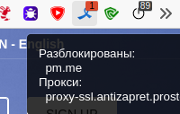

Какое-то время назад перестал проксироваться алиас pm.me, хотя сам protonmail.com проксируется. Я конечно понимаю, что можно ходить на эту почту используя основной домен, но уже привык использовать короткий адрес. Можно ли восстановить проксирование pm.me?
В листе проксирования последние недели ничего не менялось, у меня указанный домен проксируется. Он заблокирован по IP-адресу, может, ваш провайдер подменяет адрес?
$ host pm.me
pm.me has address 185.70.41.30

Мне трудно сказать, что именно случилось, просто по алиасу стала появляться заглушка. Но, как я и написал, protonmail.com (185.70.41.35) работает. Также работают и другие сайты, которые мне интересны (nnmclub.to, rutracker.org, rutor.info, kinozal.tv и подобные)
Если провайдер блокирует или подменяет IP, возможно ли это как-то обойти?
Проверьте, какой IP-адрес возвращает ваш DNS-сервер. Если он возвращает адрес страницы-заглушки — смените DNS-сервер.
Ваша заглушка могла по какой-то причине закэшироваться.
Попробуйте прочистить кэш: https://rebrand.ly/ac-clear-cache.
К сожалению, я не силен в сетевых технологиях. Но если правильно вас понял и делал, то:
nslookup protonmail.com
╤хЁтхЁ: dns.google
Address: 8.8.8.8
Не заслуживающий доверия ответ:
╚ь : protonmail.com
Address: 3.125.114.117
При этом
IP 3.125.114.117
Хост: ec2-3-125-114-117.eu-central-1.compute.amazonaws.com
Город: Франкфурт
то есть не мой провайдер. Или страница провайдерской заглушки как раз может лежать на амазоне?
Сейчас сменил DNS-сервер на гугловский 8.8.8.8, до этого был 1.1.1.1 от cloudflare, но результаты одинаковы.
ilyaigpetrov
Это не на одной машине так, так что вряд ли кеш тут причем. Да и на недавн установленной ОС, где люди не ходят по этому адресу все то же самое.
IP-адреса 3.125.114.117 нет в реестре, как и домена pm.me. Можете обратиться к вашему провайдеру для выяснения причины блокировки.
ТП отвечает, то вручную они ничего не вносят и даже не видят выгрузки блокируемых ресурсов. Этот список, по их словам, с некой периодичностью “подсасывается” непосредственно с Роскомнадзора.
PS Попробовал удаленно зайти через другого провайдера - адрес доступен ))
Так что действительно, надо пробовать долбить провайдера. (
Могу лишь отвтеить цитатой c Telegram: Contact @u2ckbot
pm.me не заблокирован
но может быть ограничен по IP-адресу:
185.70.41.30
/n_2063167 Генпрокуратура 27-31-2020/ИД769-20 2020-01-28 /d_hz2c80axkkcww
• ст. 15.3 (Статья 15.3. Порядок ограничения доступа к информации, распространяемой с нарушением закона \ КонсультантПлюс), мятеж и фейки
как ip 185.70.41.30типы блокировки: ip:
Так и должно быть, но у @Volchek этот адрес резолвится в 3.125.114.117, который не заблокирован, но провайдер блокирует доступ.
Попробовал удаленно зайти через другого провайдера - адрес доступен ))
так к что действительно, надо пробовать долбить провайдера. (
В России каждый четвёртый RIPE Atlas пробник не может достучаться туда: RIPE Atlas - RIPE Network Coordination Centre
В среднем “по миру” такой ситуации не наблюдается: RIPE Atlas - RIPE Network Coordination Centre
Если приходить на этот IP с именем example.com, то как минимум от пробника №3780 приходит сертификат заглушки с CommonName = MGTS: RIPE Atlas - RIPE Network Coordination Centre
При том пробник №3780 “в интернеты” ходить может, в “контрольном” измерении с именем pm.me на другой IP он вполне получает корректный сертификат: RIPE Atlas - RIPE Network Coordination Centre
Добро пожаловать и второй ногой в чудесный мир ТСПУ (Технических Средств Противодействия Угроам) и разных версий чёрных списков. Одной ногой мы там были уже в 2018: GitHub - darkk/rkn-git-flow: О сниферах в московском метро и бранчах блоклистов РКН и https://youtu.be/l8sxhL1U5ks?t=852
Нt хотелось бы лезть в политику, но страны “свободного мира” тоже не стесняются - действуют иначе, но даже и ещё пожестче. Лучше будем технические вопросы обсуждать. 

Не получится. Это просветительская деятельность 
А, если по технике, я в который раз говорю о том, что технические решения, полагающиеся на “достоверное” знание списка для блокировки, будут терять “полноту” знания, т.е. всё чаще глючить. Ну вот того же самого твиттера нет в списках для блокировки, например.
Я говорю это про списки блокировки вида GitHub - zapret-info/z-i: Register of Internet Addresses filtered in Russian Federation или XML-файла выгрузки, который всем провайдерам “второй гильдии” раздаётся.
Конечно, можно теоретически расковырять ТСПУ для целей адаптации их к рабочим процессам службы техподдержки и прикручивания содержащейся в коробках конфигурационной информации к автоматизированному рабочему месту сотрудника службы технической поддержки, но кто ж на это пойдёт? 
Ну, раз такая ерунда именно у моего провайдера (“Искра-телеком” aka “Seven-sky.net”), а мне неймется использовать именно короткий алиас, то я выкачал proxy.pac с вашего сайта и положил его на одну из своих страничек в сети. Настроил прокси в браузере и все работает так же, как и при использовании плагина.  Осталось понять, как мне добавить в этот proxy.pac нужный мне адрес pm.me - сам я в этом деле некомпетентен, к сожалению
Осталось понять, как мне добавить в этот proxy.pac нужный мне адрес pm.me - сам я в этом деле некомпетентен, к сожалению 
Нет-ли какого-то простого мануальчика для кофейников по добавлению/удалению ресурсов из вашего proxy.pac? Или это может нарушать вашу политику?
При этом я понимаю, что на вашем сервисе файл обновляется, а на моём не будет, но меня интересует лишь ограниченное количество ресурсов определённой направленности. Да и при необходимости ведь всегда можно включить на время ваш плагин 
Это точно создаст проблемы, не делайте так. Прокси-серверы вас забанят в течение нескольких суток.
Самый простой выход в вашем случае — добавить в файл hosts следующую строку:
185.70.41.30 pm.me
Я собственно и не собирался использовать никакие прокси-сервера кроме вашего, прописанного в вашем же proxy.pac, который я положил в скрытый раздел сайта - то есть именно HTTPS proxy-ssl.antizapret.prostovpn.org:3143; PROXY proxy-nossl.antizapret.prostovpn.org:29976
Но если это представляет для вашего сервиса проблему, я, разумеется, так делать не буду.
А про напоминание о существовании файла hosts спасибо. Хотя вроде бы Windows 10 его игнорирует?
Благодаря разговору с Вадимом Лосевым получилось понять, что я в этих словах забыл сделать поправку на то, что
- Probe v1 до сих пор, вероятно, по TLS1.0 стучится
- 3.125.114.117 TLS1.0 не принимает (что проверяется
openssl s_client -tls1 -connect 3.125.114.117:443 -servername pm.me)
Т.е., вероятно, от этого у значимого числа старых пробников случается handshake_failure.
Слова про CN=MGTS это, впрочем, не отменяет: там эта “заглушка” на другой IP адрес не выдается, т.е. вряд ли это заглушка вида “оплатите доступ в интернет”.
Будет ли проксироваться proton.me?
@Dmitriy, лучше бы вам создать отдельное обсуждение, где бы вы более подробно рассказали что именно происходит при попытке открыть proton.me.
Навскидку: попробуйте сменить провайдерский DNS-сервер на гугловский (8.8.8.8 и 8.8.4.4), или от Cloudflare (1.1.1.1, 1.0.0.1), или www.quad9.net.
Ничего не происходит: “Не удаётся установить соединение с сайтом. Проверьте, нет ли опечаток в имени хоста proton.me. DNS_PROBE_FINISHED_NXDOMAIN”
Вообще-то это раздел обсуждения плагина Антизапрет. Менять настройки интернет-соединения я не хочу.
Это ответ администратора Antizapret. В вашем случае вместо перенаправления на заглушку, провайдерский DNS не возвращает правильный IP для proton.me.
Будет, если РКН его добавит в реестр. Сейчас его в реестре нет, но есть его DNS-сервера ns1.proton.me и ns2.proton.me:

Сменить DNS-сервер из расширения я не могу, так что либо вы ждёте пока РКН добавит proton.me в реестр, либо меняете свои днс-сервера на непровайдерские.
Почему тогда, например, этот плагин позволяет мне зайти на сайт?
Потому что расширение AdGuard проксирует ВСЕ сайты, а наше расширение – только те, что в реестре. И proton.me пока в реестре нет.
Вы можете проксировать любые сайты, в том числе и вне реестра, но для этого вам понадобится свой прокси или Тор: см. Как добавить свой сайт? · anticensority/runet-censorship-bypass Wiki · GitHub.
См. Как и зачем менять DNS сервера? · anticensority/runet-censorship-bypass Wiki · GitHub.